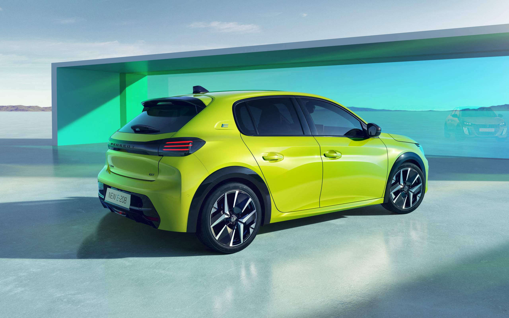
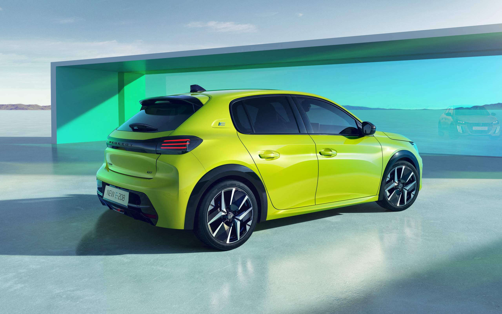

Peugeot 208 2024
 

A disputa continua acirrada entre os hatches compactos, com o Polo liderando as vendas em 2023 com mais de 111 mil unidades. Mas outro modelo do segmento aparece como uma boa opção, e por vários motivos. Estamos falando do Peugeot 208, que recentemente ganhou o tão aguardado motor 1.0 turbo de 130 cv e 20,4 kgfm. Numa comparação com o próprio Polo, ele é mais rápido no 0 a 100 km/h (9 segundos contra 10,5 segundos). Nas médias de consumo, o 208 turbo alcança 8,8 km/l (E) e 12,5 km/l (G) na cidade ou 10 km/l (E) e 14,1 km/l (G) na estrada, mostrando que agora ele também conta com a eficiência que seus rivais turbinados já tinham. Além disso, o francês tem um design mais chamativo e oferece um interior mais requintado que seus concorrentes, como Polo, HB20 e Onix. Isso sem contar sua boa lista de equipamentos, alguns exclusivos no segmento. Olhando para a versão topo de linha Griffe, que sai por R$ 114.990, ele tem multimídia de 10,3″ com espelhamento sem fio, 6 airbags, painel digital, faróis de LED, carregador wireless, frenagem autônoma de emergência, assistente de permanência em faixa e até teto solar panorâmico. Outro ponto positivo é que ele fica dentro da faixa de preços de seus rivais, com a versão mais barata saindo por R$ 89.990.